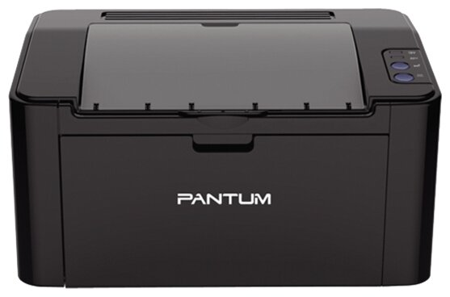

Модель: Принтер Pantum P2207
Рейтинг: ****
Фото товара:
Масса и габариты: 3,5 кг
Цена: 165 руб.
Описание:Pantum P2207 характеризуется компактными размерами и лаконичным дизайном, они оснащены загрузочными лотками на 150 листов, модулями оперативной памяти объемом 64. Крышка принтера, которая в открытом состоянии играет роль выходного лотка, защищает его от пыли. Способность автоматически переходить в спящий режим после нескольких минут простоя позволяет существенно экономить электроэнергию. На носителях формата А4 модель обеспечивает скорость печати до 22 страниц формата А4 в минуту, а на носителях североамериканского формата Letter – до 23 страниц в минуту. Принтеры Pantum используют для работы заправляемые тонер-картриджи P-210E с ресурсом 700 страниц и P-210 с ресурсом 1600 страниц, для которых подходит тонер марки PC-230B.